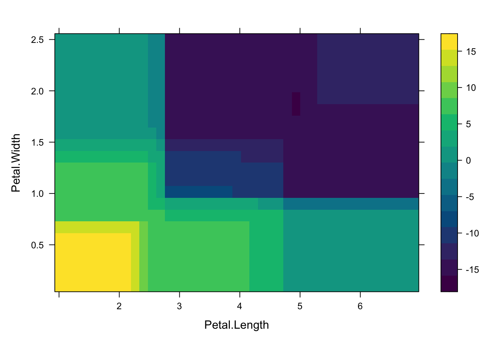

options(repos = c(CRAN = "https://cran.rstudio.com/"))Lab09 Interpretable Machine Learning Lab
1 Introduction
This document demonstrates three different interpretable machine learning techniques using R: LIME, Partial Dependence Plots (PDP), and SHAP values. We use the iris dataset and train models with different algorithms to showcase these techniques.
2 Setup CRAN Mirror
Before running the code, ensure that a CRAN mirror is set. You can do this with the following command:
3 Lab 1: LIME - Local Interpretable Model-Agnostic Explanations
In this section, we train a Random Forest model using the caret package and use the lime package to explain the model’s predictions for individual instances. LIME helps in interpreting the predictions by approximating the model’s decision boundary locally.
# Install and load the required packages
if (!require(caret)) install.packages("caret")
if (!require(randomForest)) install.packages("randomForest")
if (!require(lime)) install.packages("lime")
library(caret)
library(randomForest)
library(lime)
# Load the iris dataset
data(iris)
# Prepare training and test data
set.seed(123)
train_idx <- sample(1:nrow(iris), 0.8 * nrow(iris))
train_data <- iris[train_idx,]
test_data <- iris[-train_idx,]
# Train a random forest model using the caret package
train_control <- trainControl(method = "cv", number = 5)
rf_model <- train(Species ~ ., data = train_data, method = "rf", trControl = train_control)
# Create a lime() explainer
explainer <- lime(train_data, rf_model, bin_continuous = FALSE)
# Explain predictions for the first test instance
explanation <- explain(test_data[1,], explainer, n_features = 2, n_labels = 1)
print(explanation)# A tibble: 2 × 13
model_type case label label_prob model_r2 model_intercept model_prediction
<chr> <chr> <chr> <dbl> <dbl> <dbl> <dbl>
1 classificati… 1 seto… 1 0.781 0.983 0.793
2 classificati… 1 seto… 1 0.781 0.983 0.793
# ℹ 6 more variables: feature <chr>, feature_value <dbl>, feature_weight <dbl>,
# feature_desc <chr>, data <list>, prediction <list>4 Lab 2: Partial Dependence Plot (PDP)
Here, we use Partial Dependence Plots (PDP) to visualize how certain features affect the predictions of a Random Forest model, averaging over the values of other features.
# Install and load the pdp package
if (!require(pdp)) install.packages("pdp")
if (!require(randomForest)) install.packages("randomForest")
library(pdp)
library(randomForest)
# Train a random forest model using the iris dataset
rf_model <- randomForest(Species ~ ., data = iris)
# Create a partial dependence plot for the Petal.Length feature
partial_rf <- partial(rf_model, pred.var = "Petal.Length", plot = TRUE, rug = TRUE)
# Create a 2D partial dependence plot for the Petal.Length and Petal.Width features
partial_2d_rf <- partial(rf_model, pred.var = c("Petal.Length", "Petal.Width"), plot = TRUE)
partial_2d_rf
5 Lab 3: SHAP - SHapley Additive exPlanations
Finally, we use the XGBoost model and calculate SHAP values to explain the contribution of each feature to individual predictions. SHAP values provide detailed insight into how the model arrives at specific predictions.
# Install and load the xgboost package
if (!require(xgboost)) install.packages("xgboost")
library(xgboost)
# Prepare the iris dataset
iris_data <- as.matrix(iris[, -5])
iris_labels <- as.numeric(iris$Species) - 1
# Train an XGBoost model
xgb_data <- xgb.DMatrix(data = iris_data, label = iris_labels)
xgb_model <- xgboost(data = xgb_data, objective = "multi:softprob", num_class = 3, nrounds = 50)[1] train-mlogloss:0.736115
[2] train-mlogloss:0.524235
[3] train-mlogloss:0.387996
[4] train-mlogloss:0.294146
[5] train-mlogloss:0.226824
[6] train-mlogloss:0.177835
[7] train-mlogloss:0.141766
[8] train-mlogloss:0.115002
[9] train-mlogloss:0.094791
[10] train-mlogloss:0.078860
[11] train-mlogloss:0.066746
[12] train-mlogloss:0.057845
[13] train-mlogloss:0.050360
[14] train-mlogloss:0.044290
[15] train-mlogloss:0.039567
[16] train-mlogloss:0.035267
[17] train-mlogloss:0.032581
[18] train-mlogloss:0.030403
[19] train-mlogloss:0.028410
[20] train-mlogloss:0.026969
[21] train-mlogloss:0.025933
[22] train-mlogloss:0.025456
[23] train-mlogloss:0.024547
[24] train-mlogloss:0.023938
[25] train-mlogloss:0.023182
[26] train-mlogloss:0.022793
[27] train-mlogloss:0.022305
[28] train-mlogloss:0.021978
[29] train-mlogloss:0.021562
[30] train-mlogloss:0.021312
[31] train-mlogloss:0.020793
[32] train-mlogloss:0.020556
[33] train-mlogloss:0.020348
[34] train-mlogloss:0.020017
[35] train-mlogloss:0.019825
[36] train-mlogloss:0.019623
[37] train-mlogloss:0.019295
[38] train-mlogloss:0.019071
[39] train-mlogloss:0.018741
[40] train-mlogloss:0.018543
[41] train-mlogloss:0.018265
[42] train-mlogloss:0.018117
[43] train-mlogloss:0.017943
[44] train-mlogloss:0.017812
[45] train-mlogloss:0.017674
[46] train-mlogloss:0.017545
[47] train-mlogloss:0.017425
[48] train-mlogloss:0.017313
[49] train-mlogloss:0.017202
[50] train-mlogloss:0.017058 # Calculate SHAP values
shap_values <- predict(xgb_model, xgb_data, predcontrib = TRUE)
# Function to display the first 5 and last 5 rows for each class
display_shap_values <- function(shap_values) {
# Get the number of rows in each round
num_rows <- nrow(shap_values)
# Display the first 5 rows
cat("First 5 rows:\n")
print(shap_values[1:5, ])
# Display the last 5 rows
cat("\nLast 5 rows:\n")
print(shap_values[(num_rows-4):num_rows, ])
}
# Assuming shap_values is a list where each element corresponds to a class
for (i in 1:length(shap_values)) {
cat("\nClass", i, "SHAP values:\n")
display_shap_values(shap_values[[i]])
}
Class 1 SHAP values:
First 5 rows:
Sepal.Length Sepal.Width Petal.Length Petal.Width BIAS
[1,] 0 0 3.262571 0 0.04764161
[2,] 0 0 3.262571 0 0.04764161
[3,] 0 0 3.262571 0 0.04764161
[4,] 0 0 3.262571 0 0.04764161
[5,] 0 0 3.262571 0 0.04764161
Last 5 rows:
Sepal.Length Sepal.Width Petal.Length Petal.Width BIAS
[1,] 0 0 -2.539314 0 0.04764161
[2,] 0 0 -2.539314 0 0.04764161
[3,] 0 0 -2.539314 0 0.04764161
[4,] 0 0 -2.539314 0 0.04764161
[5,] 0 0 -2.539314 0 0.04764161
Class 2 SHAP values:
First 5 rows:
Sepal.Length Sepal.Width Petal.Length Petal.Width BIAS
[1,] -1.125154 -0.01583098 -2.157680 0.3301820 0.5767004
[2,] -1.165514 -0.02853454 -2.104475 0.3300412 0.5767004
[3,] -1.164506 -0.01680315 -2.110845 0.3236715 0.5767004
[4,] -1.165514 -0.02853454 -2.104475 0.3300412 0.5767004
[5,] -1.164506 -0.01680315 -2.110845 0.3236715 0.5767004
Last 5 rows:
Sepal.Length Sepal.Width Petal.Length Petal.Width BIAS
[1,] 0.1833352 0.01575263 -1.5783262 -1.280869 0.5767004
[2,] 0.1752359 -0.27759910 -0.3262171 -1.573192 0.5767004
[3,] 0.1194153 0.00479672 -1.5867946 -1.310312 0.5767004
[4,] 0.1340499 0.08531170 -1.5761062 -1.273170 0.5767004
[5,] 0.3555895 0.05993602 -0.7832149 -1.381872 0.5767004
Class 3 SHAP values:
First 5 rows:
Sepal.Length Sepal.Width Petal.Length Petal.Width BIAS
[1,] -0.5639935 -0.47829106 -1.943876 -0.9199048 0.642118
[2,] -0.5709345 0.04934498 -1.855282 -1.0953951 0.642118
[3,] -0.5639935 -0.47829106 -1.943876 -0.9199048 0.642118
[4,] -0.5639935 -0.44716242 -1.943876 -0.9409481 0.642118
[5,] -0.5639935 -0.47829106 -1.943876 -0.9199048 0.642118
Last 5 rows:
Sepal.Length Sepal.Width Petal.Length Petal.Width BIAS
[1,] 0.3213709 0.1720978 1.928068 1.661949 0.642118
[2,] 0.3572217 0.2096745 1.280465 1.685174 0.642118
[3,] 0.3213709 0.1720978 1.928068 1.661949 0.642118
[4,] 0.3697088 -0.3519310 2.217201 1.509665 0.642118
[5,] -0.6853434 0.1798426 1.275877 1.737563 0.6421186 Conclusion
This lab demonstrates three distinct techniques for interpreting machine learning models. LIME provides local explanations for individual predictions, Partial Dependence Plots offer insights into average feature effects, and SHAP values explain the contribution of each feature to individual predictions.